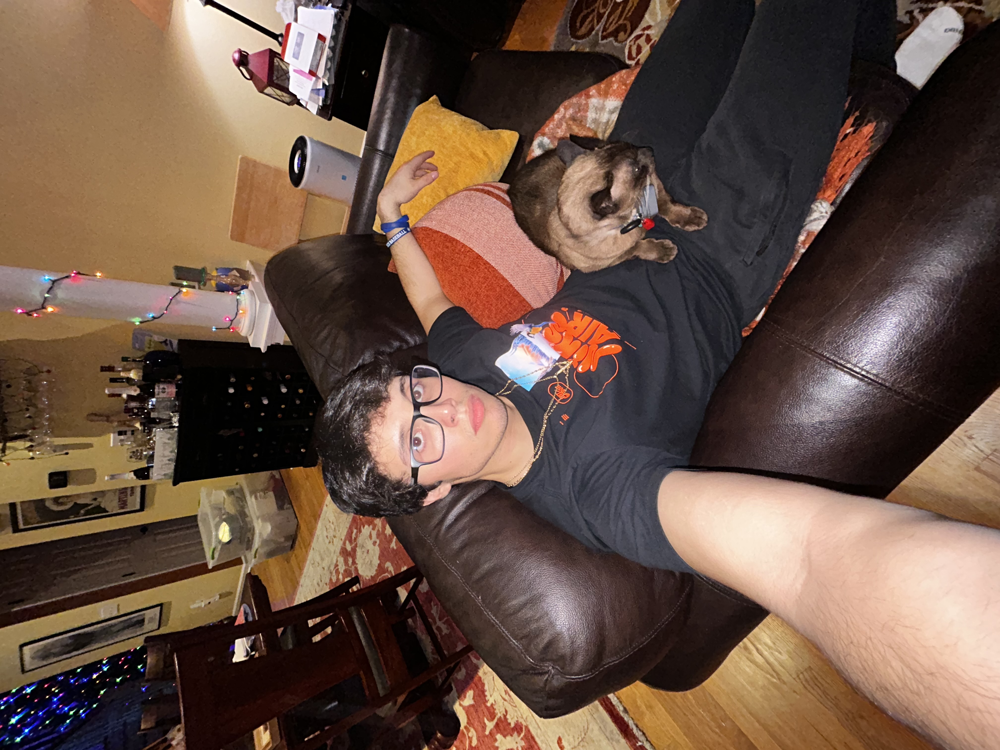

I am from Norwalk CT, and I started coding when I was in my junior and senior year of high school. At the time I had done a little bit of coding but I knew that it was an industry that was high in demand. I chose to go to Quinnipiac and do the 3+1 program, and I have loved my time here. I really enjoy watching basketball, and baseball. I enjoy working out, and hanging out with people. My favorite music artists are Future, Travis scott, and Foo Fighters. I love playing video game when I have time. My favorite games are minecraft, NBA2K, Gta 5 online, and Rocket League.
